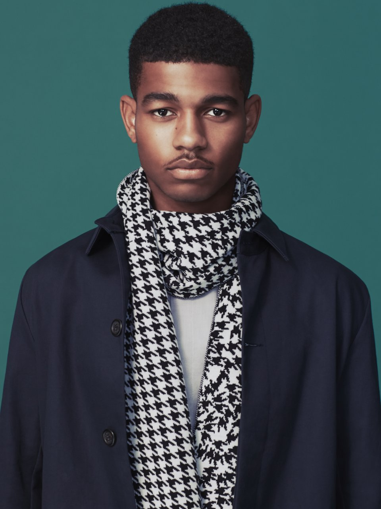

Studio Moniker
Conditional Design Workbook
Logic based drawing exercises
Fungus Series
Crowdsourced sticker installations
Your Line or Mine
Crowdsourced animation installation
Anti-Selfie Club
Interactive reflection on the Black Square
Pied de Poules Fermier
Participatory scarf design

Place a Stone
Participatory memorial in Amsterdam
Do Not Touch
Ever-changing interactive music video